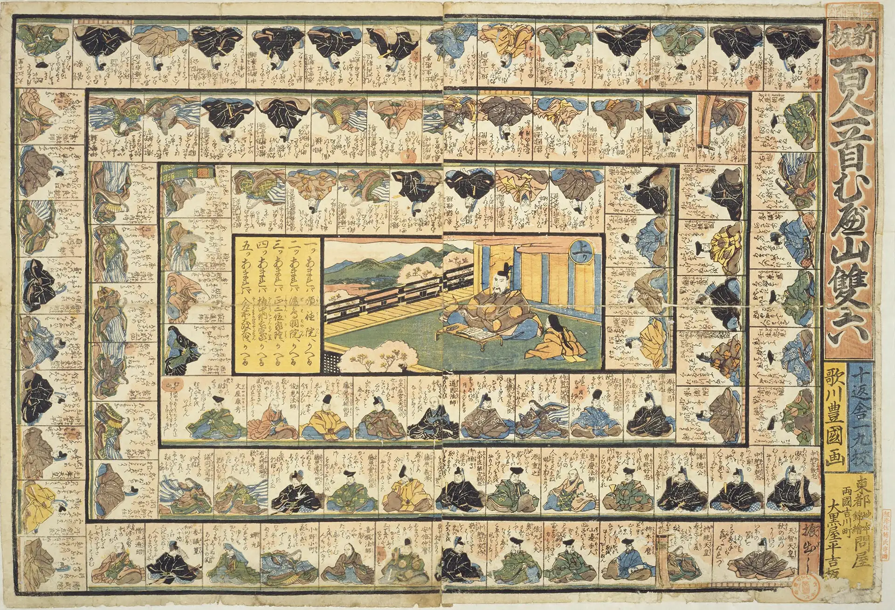

百人一首 むべ山すごろく
十返舎一九が校訂し、歌川豊国が絵を手がけた江戸時代のすごろく「新板百人一首むべ山双六」の盤面を使ったすごろくゲームです。百人一首の歌人にまつわる○×クイズが、100コマそれぞれに設定されています。「むべ山風を」のフレーズで知られる22番のマスには、特別な仕掛けが用意されています。
盤面の数字をクリックすると、その番号の歌人の和歌と現代語訳が表示されます。
ゲームのルール
- 🌀百人一首にちなんだ全102マスの道を進もう（1〜100コマ目は同じ歌番号の歌人のマス）
- 🎲サイコロを振ったら、出た目の数だけ前に進む
- ❓止まったマスの歌人の○×クイズに正解しないと、そのマスへは進めない
- 🔁不正解でもその場に留まるだけ。次の自分の番にもう一度同じ問題に挑戦できる
- 🔢スタートするコマを自由に設定でき、好きな場所から上り（ゴール）を目指せる
-
🌀
22コマ目に止まると、むべ山双六の特別ルールが適用されて、もう一度サイコロを振れる。
その出た目に応じて別のマスへワープできる。- 1の目 → 100コマ目へ
- 2の目 → 13コマ目へ
- 3の目 → 98コマ目へ
- 4の目 → 97コマ目へ
- 5の目 → 96コマ目へ
- 6の目 → ワープなし。通常どおり6コマ前に進む
- ⛰️上り（ゴール）に先にたどり着いた人が勝ち
- 🏅1人プレイでは最短手数でのゴールを目指して自己ベスト更新に挑戦。2人以上なら、誰が先にゴールするかを競います！
人数をえらぶ（最大5人）
どのコマからスタートするかをえらぶ
初期設定は0（スタート地点）。例えば50に設定すると、50コマ目からゴール（101コマ目）を目指せます。
キャラクターをえらぶ
まだ記録がありません

Utagawa Kunisada, Public domain, via Wikimedia Commons
サイコロを振ろう！
出題：百人一首クイズ
問題文がここに入ります。
🎁